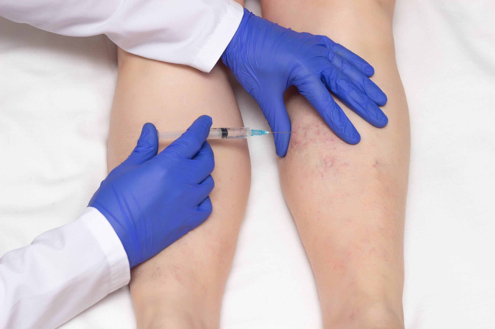

Tricologia
Tricologia é a área da dermatologia destinada à prevenção e tratamento incluindo a estrutura e o aspecto dos fios e do couro cabeludo. O médico tricologista busca solucionar os problemas capilares como queda de cabelo, dermatite, psoríase, cabelo oleoso e ressecado.
Queda de cabelo
A queda de cabelo é uma reclamação frequente entre homens e mulheres de todas as idades, especialmente entre os mais velhos ou aqueles que enfrentam situações anormais.
Pode ser causada por diversos fatores, como estresse, deficiências vitamínicas, doenças como tireoidopatias e lúpus, entre outras.
A perda excessiva de cabelo, caracterizada pela queda de mais de 100 fios por dia, é preocupante e pode ser consequência de alterações hormonais na menopausa ou andropausa, estresse, alimentação deficiente em nutrientes e vitaminas, ou anemia, por exemplo.
. Queda natural dos cabelos
É normal perder até 150 fios de cabelo por dia. Além disso, há uma variação sazonal na quantidade de fios que caem diariamente.
No outono, por exemplo, há uma tendência de aumento na queda de cabelo.
Em alguns casos pode ser por herança genética como a calvície feminina e a calvície masculina e ainda, ter origem em transtornos emocionais, como são os casos da Alopecia Areata e da Tricotilomania.

Lifting Rejuvenate
Lifting Rejuvenate: Aparência Jovial e Natural com Tratamentos Personalizados
Deseja melhorar a aparência do seu rosto, tornando-o mais jovem e natural? Oferecemos tratamentos assertivos, com resultados cientificamente comprovados e consultas personalizadas!
O Lifting Rejuvenate é um protocolo personalizado para cada paciente, de acordo com suas necessidades. Utilizamos bioestimuladores e biorremodeladores para promover a sustentação facial, combinando vários métodos para alcançar o resultado esperado.
Para quem é indicado?
Este tratamento é ideal para pacientes que desejam uma aparência mais jovial, com contornos do rosto bem definidos.
O que o tratamento oferece?
O Lifting Rejuvenate previne os sinais do tempo, tratando rugas, linhas de expressão, flacidez e perda de massa facial. Além disso, eleva sua autoestima, devolvendo jovialidade e beleza ao seu rosto.

Face Harmony
Lifting Rejuvenate e Face Harmony: Tratamentos Personalizados para uma Aparência Jovial e Natural
Deseja um rosto mais jovem e natural? Oferecemos tratamentos personalizados com resultados comprovados!
Lifting Rejuvenate: Protocolo personalizado que utiliza bioestimuladores e biorremodeladores para sustentar a face. Ideal para quem deseja contornos faciais bem definidos, prevenindo sinais do tempo e tratando rugas, flacidez e perda de massa facial, elevando a autoestima e a jovialidade.
Face Harmony: Combina diversos tratamentos faciais para melhorar a qualidade da pele e corrigir assimetrias. Indicado para excesso de rugas, bigode chinês, problemas dentários, estética nasal desarmônica, perda de volume facial e flacidez. Dura de 30 minutos a uma hora, com resultados visíveis imediatamente e recuperação em até cinco dias.

Depilação a LED
A depilação a LED é um método inovador que utiliza fototermólise para eliminar pelos na raiz com precisão superior e menos dor em comparação ao laser. Especialmente eficaz para peles negras, o LED oferece conforto graças às ponteiras resfriadas e proporciona resultados rápidos e otimizados. O número de sessões varia conforme o tipo de pele, mas os efeitos são visíveis desde a primeira aplicação. Adequado para todas as áreas do corpo, este tratamento é seguro para todos os tons de pele, garantindo conforto e eficácia.

Escleroterapia
Escleroterapia (PEIM) para Microvasos
A Escleroterapia é uma técnica que elimina microvasos nas pernas através da injeção de um medicamento esclerosante, melhorando a aparência das pernas.
Causas: Refluxo sanguíneo, problemas nas válvulas, genética, gravidez, longos períodos em pé/sentado, anticoncepcionais.
Sessões: Variam conforme o paciente; pode ser necessária uma ou várias.
Cuidados Pós-Procedimento:
Evitar cremes e depilação por 24h
Adiar exercícios por 24h
Evitar sol no primeiro dia
Contraindicações: Diabetes descompensada, problemas vasculares, cardíacos, renais, hepáticos, infecciosos, gestação, trombose, câncer ativo.